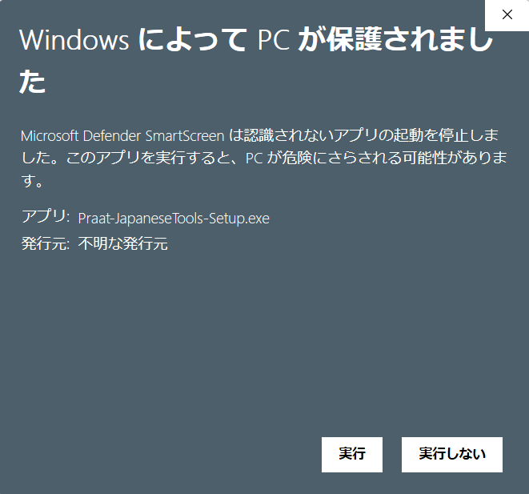

Praat のプラグイン機能として導入することで、スクリプトファイルを個別に読み込むことなく、メニューバーおよびアクションパネルから直接機能を実行できます。
1. Windows用インストーラー（.exe）
- 上部のダウンロードボタンから Windows 版（
Praat-JapaneseTools-Setup.exe） を取得します。 - ダウンロードしたファイルを実行します（管理者権限は不要です）。
- 「インストール先フォルダーの指定」画面が表示されたら、保存場所を変更せずデフォルトのまま「次へ」をクリックします（※Praat がプラグインを自動認識するために既定のパスが必要です）。
- 画面の指示に従ってインストールを完了します。
- Praat を起動（または再起動）します。
インストーラー実行時、Microsoft Defender SmartScreen により「Windows によって PC が保護されました」（発行元: 不明な発行元）という青い画面が表示される場合があります。
※これは個人・研究用途のオープンソースソフトウェアであるため、有償の組織用コード署名を行っていないことによる仕様です。危険なファイルではありませんので、以下の手順で実行してください。
- 画面内の説明文にある「詳細情報」（下線付きリンク）をクリックします。
- 右下に表示される「実行」ボタンをクリックします。

・メニューバー:
Praat → 日本語音声ツール (JA)・アクションボタン: Sound または TextGrid オブジェクト選択時に右側パネルに
日本語ツール (JA) ボタンが表示されます。アンインストール: Windows の「設定」 → 「アプリ」 → 「インストールされているアプリ」から削除できます。
2. macOS用インストーラー（.pkg）
- 上部のダウンロードボタンから macOS 版（
Praat-JapaneseTools-Setup.pkg） を取得します。 - ダウンロードしたファイルをダブルクリックして実行し、画面の指示に従ってインストールを完了します（Intel / Apple Silicon 共通対応）。
- Praat を起動（または再起動）します。
macOS では、インターネットからダウンロードした未署名のインストーラーを開く際に「開発元を検証できないため開けません」または「悪質なソフトウェアかどうかを Apple では確認できないため開けません」と表示され、通常のダブルクリックでは起動がブロックされる場合があります。
※Apple Developer の有償公証を受けていないことによる macOS の標準セキュリティ動作です。以下のいずれかの手順で一度許可することで正常にインストールできます。
- ダウンロードした
Praat-JapaneseTools-Setup.pkgを Control キーを押しながらクリック（または右クリック／トラックパッドの二本指タップ）します。 - 表示されたメニューから 「開く」 を選択します。
- 警告ダイアログが表示されたら、ダイアログ内の 「開く」 ボタンをクリックするとインストーラーが起動します。
- 画面左上のアップルメニュー（） → 「システム設定」（macOS 12以前は「システム環境設定」）を開きます。
- 左メニューの 「プライバシーとセキュリティ」 を選択し、画面を下方へスクロールします。
- 「セキュリティ」欄にある「"Praat-JapaneseTools-Setup.pkg" は開発元を確認できないため〜」の横にある 「このまま開く」 をクリックします。
・メニューバー:
Praat → 日本語音声ツール (JA)・アクションボタン: Sound または TextGrid オブジェクト選択時に右側パネルに
日本語ツール (JA) ボタンが表示されます。アンインストール: プラグインフォルダ（
~/Library/Preferences/Praat Prefs/plugin_JapaneseTools/）内の uninstall.command をダブルクリックすることで、いつでも安全に登録解除・削除できます。
3. Praat スクリプト（install.praat）
OS（Windows / macOS / Linux）に関わらず、Praat アプリケーション上から直接登録を行う手順です。
- 本リポジトリの
installer/install.praatを Praat で開きます（メニューのPraat→Open Praat script...またはドラッグ＆ドロップ）。 - スクリプトウィンドウの
Run→Runを実行します。 - 確認ダイアログの「インストール実行」をクリックします。
- Praat を再起動します。
4. シェルスクリプト / バッチファイル
リポジトリを作業ディレクトリにクローンまたは展開してシンボリックリンク／ジャンクションを作成する手順です。
Windows の場合:
installer\install.batmacOS / Linux の場合:
bash installer/install.sh